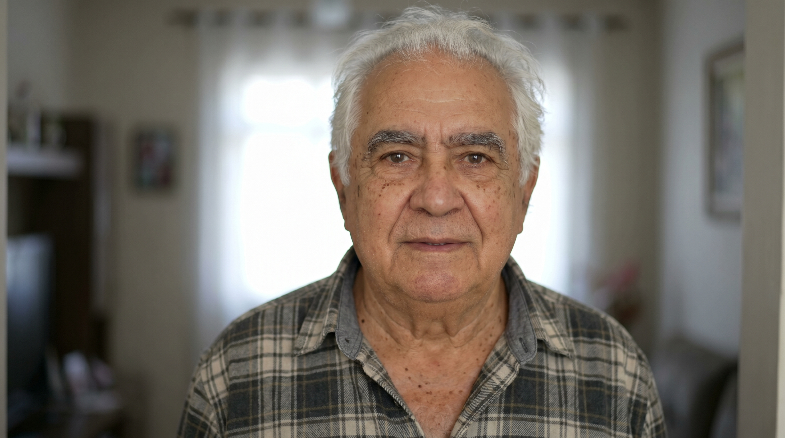

Para homens na terceira idade que se recusam a aceitar que é tarde demais
O guia técnico com embasamento científico e plano prático de 30 dias que já mudou a vida de centenas de homens na terceira idade. Escrito por Julia Sanches, especialista em saúde masculina.
A maioria dos homens de idade mais avançada convive em silêncio com pelo menos uma dessas situações. Não é fraqueza. Não é coisa da idade. É fisiologia — e fisiologia pode ser tratada.
A medicina convencional trata os sintomas. O comprimido azul funciona, sim — mas ele não muda nada no que está causando o problema. Quando você para de tomar, o problema volta.
A Fisiologia do Prazer não é mais um conteúdo genérico de internet. É um guia técnico, com linguagem acessível, que explica o que acontece no seu corpo e entrega um protocolo de 30 dias para você começar hoje — e sentir diferença ainda no primeiro mês.
Cada capítulo foi estruturado para você entender o porquê antes de agir — porque protocolo que você entende é protocolo que você cumpre.
Por que o corpo muda, o que é possível reverter e o que a medicina convencional não explica direito. Base para tudo o que vem depois.
Como entender testosterona, estrogênio e os marcadores que realmente importam nos seus exames — o que pedir ao médico e como interpretar os resultados.
A raiz física do problema erétil na maioria dos homens. Como a alimentação afeta diretamente o fluxo sanguíneo — e o que mudar primeiro.
O plano físico e fisiológico para reativar a função sexual progressivamente. Sem pressa, sem pressão — com progressão estruturada e respeitando o seu ritmo.
Por que dormir mal destrói o desejo e como o estresse crônico bloqueia a testosterona — e o protocolo noturno para reverter esse ciclo.
Os exercícios específicos que elevam hormônios naturalmente — sem academia cara, sem suplemento, sem impacto excessivo para as articulações.
O cronograma semana a semana com tudo integrado: alimentação, treino, sono, protocolo erétil. Um passo por vez, começando hoje.
Cada história abaixo é de um homem que chegou cético e saiu transformado. Não tem milagre — tem protocolo, consistência e resultado.
"Passei dois anos achando que era coisa da idade e que não tinha mais jeito. Li o guia inteiro em dois dias. Na terceira semana já sentia diferença no desejo. Na quarta, minha mulher perguntou o que tinha mudado. Não precisei de remédio nenhum."

"Fiz cirurgia de próstata há três anos e achei que minha vida sexual tinha acabado. O protocolo de recondicionamento do capítulo 4 me devolveu algo que eu tinha dado como perdido. Simples, sem pressa, sem pressão. Funciona."
"Sempre fui cético com esse tipo de material. Mas os 7 capítulos têm embasamento de verdade. Segui o plano de 30 dias à risca. Perdi 4 quilos, durmo melhor e voltei a acordar com ereção matinal — algo que não acontecia faz uns 5 anos."
"O que me impressionou foi a honestidade. Não tem promessa milagrosa, não tem papo de guru. Tem protocolo. Fiz a parte da alimentação primeiro, depois o treino. Em 6 semanas estava diferente — na disposição, no humor e na cama."
"Meu médico me receitou TRT logo de cara. Resolvi tentar o protocolo do livro antes. Três meses depois meus exames melhoraram e o próprio médico disse que posso esperar mais antes de começar a reposição. Valeu muito."
"Minha esposa me deu esse guia de presente sem me contar o motivo. No começo fiquei com o ego ferido. Depois de ler, entendi que ela estava certa em se preocupar. Segui o protocolo por 5 semanas e a diferença foi real — não só na parte sexual, mas na energia do dia a dia, no humor, no sono. Hoje agradeço ela todo dia por isso."
Se por qualquer motivo você não ficar satisfeito com o conteúdo — seja lá qual for —
basta me enviar um e-mail em até 7 dias após a compra e eu devolvo cada centavo.
Sem burocracia, sem questionamento, sem demora.
Porque acredito que nenhum homem deveria pagar por algo que não o ajuda.
O risco é inteiramente meu.
Sim. O conteúdo foi escrito levando em conta que homens na terceira idade geralmente têm comorbidades. O protocolo é adaptável e não contraindicado para a maioria das condições. Dito isso, qualquer mudança de rotina deve ser discutida com seu médico — o guia não substitui acompanhamento profissional.
Não. O guia não orienta nem sugere a suspensão de nenhum medicamento. O protocolo é complementar ao tratamento que você já faz — e em muitos casos pode potencializar os resultados do acompanhamento médico.
Cada organismo responde em um ritmo diferente. Os relatos mais comuns são de mudanças perceptíveis entre 3 e 6 semanas seguindo o protocolo com consistência. O plano de 30 dias foi estruturado exatamente para que você tenha uma progressão clara e realista.
Após a confirmação do pagamento, você recebe acesso imediato ao conteúdo. O arquivo funciona em celular, tablet, computador — qualquer dispositivo com leitor de PDF.
Você tem 7 dias de garantia incondicional. Se não gostar do conteúdo por qualquer razão, é só enviar um e-mail e eu faço o reembolso completo sem nenhuma pergunta. Sem risco.
Sim. A decisão de precificar assim foi intencional: o objetivo é que o acesso ao conhecimento não seja uma barreira. O conteúdo é completo, técnico e estruturado — não é um resumo, não é um PDF de 5 páginas. São 7 capítulos com embasamento científico e protocolo aplicável.
Você já esperou tempo suficiente
Por R$17 — menos que um almoço — você começa hoje a entender o próprio corpo e a aplicar um protocolo com base científica que pode mudar o próximo capítulo da sua vida.
✅ Quero Meu Guia — R$17 · Acesso Imediato 🔒 Compra segura · Garantia de 7 dias